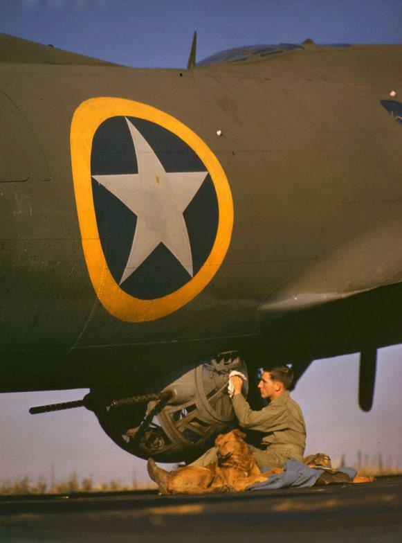
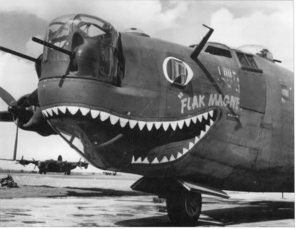
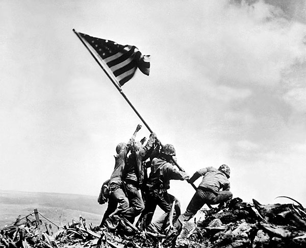

Estados Unidos en la Segunda Guerra Mundial: De la Neutralidad a la Victoria
La participación de Estados Unidos en la Segunda Guerra Mundial fue un momento crucial en la historia del siglo XX. Desde su entrada en el conflicto en 1941 hasta la victoria final en 1945, Estados Unidos desempeñó un papel determinante en la derrota del Eje y la preservación de la democracia y la libertad en el mundo. En este ensayo, exploraremos en detalle la participación de Estados Unidos en la Segunda Guerra Mundial, desde sus orígenes hasta sus impactos a largo plazo.
Contexto Histórico: La Neutralidad y el Aislacionismo
Antes de su entrada en la Segunda Guerra Mundial, Estados Unidos adoptó una política de neutralidad y aislacionismo en relación con los conflictos en Europa y Asia. La memoria de la Primera Guerra Mundial y las consecuencias económicas de la Gran Depresión llevaron a la opinión pública estadounidense a rechazar la intervención en los asuntos extranjeros y a centrarse en los problemas domésticos. Sin embargo, a medida que la guerra se intensificaba en Europa y Asia y las acciones agresivas de las potencias del Eje amenazaban la estabilidad global, Estados Unidos comenzó a reevaluar su posición y a considerar la posibilidad de unirse al conflicto en apoyo de sus aliados democráticos.
El Ataque a Pearl Harbor y la Entrada en la Guerra
El 7 de diciembre de 1941, las fuerzas japonesas lanzaron un ataque sorpresa contra la base naval de Pearl Harbor en Hawái, provocando la muerte de miles de soldados estadounidenses y causando graves daños a la flota del Pacífico de Estados Unidos. El ataque a Pearl Harbor fue un momento decisivo que llevó a Estados Unidos a declarar la guerra a Japón al día siguiente y entrar oficialmente en la Segunda Guerra Mundial. La entrada de Estados Unidos en la guerra cambió drásticamente el curso del conflicto, ya que proporcionó un impulso crucial a los aliados y permitió la movilización de los recursos industriales y militares de Estados Unidos en apoyo de la guerra. La economía estadounidense se convirtió en el motor de la guerra, produciendo armamento, suministros y equipo en una escala sin precedentes para abastecer a las fuerzas aliadas en Europa y el Pacífico.

>
La Movilización Industrial y la Economía de Guerra
La participación de Estados Unidos en la Segunda Guerra Mundial desencadenó una movilización industrial masiva que transformó la economía del país y tuvo un impacto significativo en la guerra. Las fábricas estadounidenses producían armamento, aviones, tanques, municiones y suministros a un ritmo vertiginoso, lo que permitió a los aliados mantener la superioridad militar y logística en el campo de batalla. La economía de guerra también llevó a cambios significativos en la sociedad estadounidense, con millones de hombres y mujeres abandonando sus hogares y empleos para unirse a la fuerza laboral industrial. La movilización económica y la expansión de la industria de defensa crearon empleo y oportunidades para muchos estadounidenses, pero también llevaron a cambios en el estilo de vida y la estructura social del país.
La Campaña en Europa: Desde el Día D hasta la Victoria
La participación de Estados Unidos en la guerra en Europa se centró en la campaña del Frente Occidental, que culminó en el desembarco del Día D el 6 de junio de 1944. El desembarco en Normandía marcó el comienzo de la ofensiva aliada en Europa occidental y allanó el camino para la liberación de Francia y la derrota del Tercer Reich. A medida que las fuerzas aliadas avanzaban hacia el este desde Normandía, se encontraron con una feroz resistencia por parte de las fuerzas alemanas, que lucharon con tenacidad y determinación en defensa de su patria. Sin embargo, la superioridad numérica y tecnológica de los aliados, combinada con el poder aéreo y la logística de Estados Unidos, eventualmente abrumaron a las fuerzas del Eje y llevaron a la liberación de Europa occidental.

La Campaña del Pacífico: De Midway a Okinawa
La participación de Estados Unidos en la guerra en el Pacífico se centró en la campaña del Pacífico, que enfrentó a las fuerzas estadounidenses contra Japón en una serie de batallas feroces e intensas. La Batalla de Midway en junio de 1942 fue un punto de inflexión crucial en la guerra en el Pacífico, con la derrota japonesa en la batalla naval que debilitó seriamente su capacidad de continuar la ofensiva. A medida que las fuerzas estadounidenses avanzaban hacia el este desde el Pacífico central, se encontraron con una resistencia obstinada por parte de las fuerzas japonesas, que lucharon con ferocidad en defensa de sus territorios y posesiones. Batallas como Guadalcanal, Iwo Jima y Okinawa fueron algunas de las más sangrientas y costosas de la guerra en el Pacífico, pero eventualmente llevaron a la rendición japonesa y la liberación de Asia del dominio japonés.
El Fin de la Guerra y las Consecuencias
La Segunda Guerra Mundial llegó a su fin en agosto de 1945, cuando Estados Unidos lanzó dos bombas atómicas sobre las ciudades japonesas de Hiroshima y Nagasaki, provocando la rendición incondicional de Japón y poniendo fin al conflicto en el Pacífico. La victoria de los aliados fue celebrada en todo el mundo, pero también dejó un legado de devastación y sufrimiento en muchas partes del mundo. La Segunda Guerra Mundial tuvo enormes consecuencias para Estados Unidos y el mundo en su conjunto. La guerra transformó la economía, la sociedad y la política de Estados Unidos, consolidando su posición como una potencia mundial y estableciendo las bases para el orden internacional de la posguerra. La guerra también dejó un saldo humano y material devastador, con millones de muertos, heridos y desplazados en todo el mundo.
Conclusiones
La participación de Estados Unidos en la Segunda Guerra Mundial fue un momento crucial en la historia del país y del mundo. Desde su entrada en el conflicto en 1941 hasta la victoria final en 1945, Estados Unidos desempeñó un papel determinante en la derrota del Eje y la preservación de la democracia y la libertad en el mundo. La Segunda Guerra Mundial dejó un legado duradero de sacrificio y sufrimiento, pero también de resistencia y determinación. La victoria de los aliados fue un testimonio del poder del espíritu humano y la capacidad de lucha por la libertad y la justicia en tiempos de crisis. A través del estudio y la reflexión sobre este período oscuro de la historia, podemos honrar el sacrificio y el heroísmo de aquellos que lucharon y murieron por la libertad y la justicia en todo el mundo.
